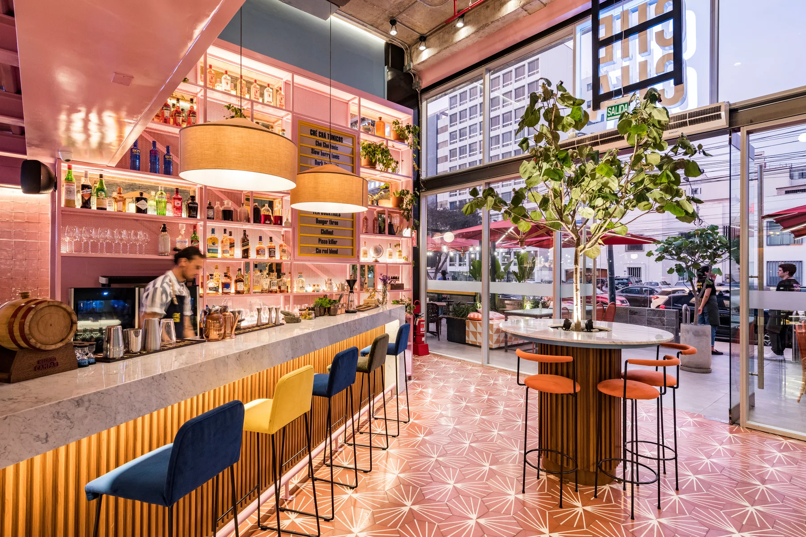

Arquitectura comercial y gastronómica
Espacios que funcionan tan bien como se ven.
Diseño arquitectónico, operación y gestión integral para negocios y marcas.
Explorar proyectosExperiencia profesional convertida en arquitectura clara, operativa y con identidad.
DARQA integra diseño, layout, cocinas, especialidades y expedientes técnicos para proyectos comerciales y gastronómicos.
+14años de trayectoria
+20marcas atendidas
+50proyectos por año, equipo actual
S/28 MMbolsa anual gestionada en Delosi
Portafolio profesional
Experiencia en distintas escalas y tipologías
Una selección provisional y equilibrada de proyectos documentados.
Capacidades
Del concepto al expediente técnico
01
Identidad arquitectónica
Conceptos espaciales alineados con la marca, el mercado y el público.
02
Diseño gastronómico
Layouts y cocinas organizados desde la operación real del negocio.
03
Gestión integral
Coordinación de cronograma, presupuesto, normativa y especialidades.
Arquitectura con buen ojo, criterio técnico y comprensión del negocio.